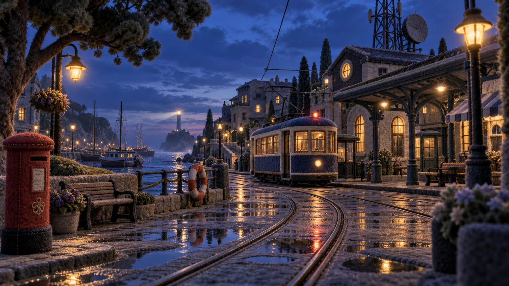

FIRST EXPERIENCES
FIRST EXPERIENCES
펠트 도시의 미술 기준 장면SYNK · SEPTEMBER 2026
새로운 경험의 첫 장.
배운 것을 써보고, 함께 이야기를 완성하고,
서로 다른 방식으로 같은 장면을 만납니다.
LAB · SHIFT / 실전 리허설
고객의 요구가 바뀐다면.
질문하고 제안하고, 달라진 조건에 다시 답합니다. 처음 생각과 수정 이유가 나만의 실습 기록으로 남습니다.
첫 의뢰 만나기SYNK COMMON / 접근성 감상실
같은 장면, 여러 가지 길.
장면을 글로 살펴보고, 움직임을 조절하고, 키보드로 이동합니다. 감상에 필요한 길을 하나씩 넓혀 갑니다.
다른 방식으로 감상하기